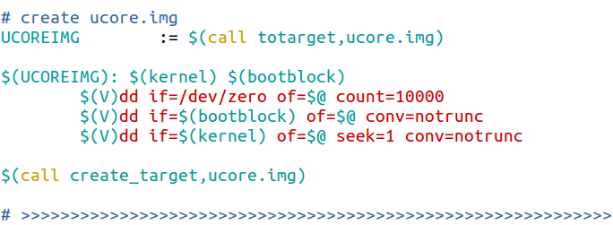

- 
以上为Makefile文件中创建ucore.img的代码
解释如下：(从上到下依次解释)(从上到下为笔者完整分析过程
```makefile
先给出分析结果
1、
UCOREIMG := $(call totarget,ucore.img) #定义变量UCOREIMG且将bin/ucore.img赋给UCOREIMG
下面为分析步骤：
# 'UCOREIMG' 定义变量UCOREIMG # ':=' 直接赋值、右边当前位置的值赋给左边 # $(call totarget,ucore.img) # 将ucore.img赋值给临时变量$(1)，这个临时变量定义在totarget里面中， # 返回值为ucore.img替换$(1)之后totarget定义的表达式的值 # 寻找totarget，查找之后发现在include引用的tools/function.mk文件里 # totarget变量在21行解释include tools/function.mk
# include关键字，告诉make去读取include包含的文件，读取结束后再继续读取Makefile # 文件。推理出在此文件中，在同级的tools文件夹找到此文件,找到了对应的totarget.SECONDEXPANSION:
# 在function.mk第三行。二次扩展声明：增加一次对makefile的解析，对一些推迟 # 展开的变量进行展开。在此声明范围内引用变量需要多加一个$,亦即$$(var)
totarget = $(addprefix $(BINDIR)$(SLASH),$(1))
# $(addprefix fixstring,string1 string2...)为给后面的 # string添加fixstring前缀。寻找BINDIR。$(1)指得为前面call传递的临时变量亦即 # ucore.img、注意此时为‘=’表示不立即展开变量(以最终为准)
# BINDIR变量在27行，SLASH在29行
# 结果显而易见totarget为向ucore.img添加前缀'bin/'
BINDIR := bin #BINDIR为bin、寻找SLASH(英文：斜杠的意思)
SLASH := / #果不其然定义为 '/'
# 2、
$(UCOREIMG): $(kernel) $(bootblock) # 变量UCOREIMG作为目标体、目标文件，
# 变量kernel和变量bootblock为所创建目标体所依赖的文件
$(kernel) #寻找定义变量kernel的语句
```
+ 找到了创建kernel的代码(添加了一些注释)
+ ```makefile
# create kernel target
kernel = $(call totarget,kernel) #定义变量kernel且将bin/kernel赋给此变量,'='表示不立即展开变量
$(kernel): tools/kernel.ld #指出kernel目标生成需要依赖tools/kernel.ld文件。其为链接器脚本，将一
# 个或多个输入文件合成一个输出文件，对链接器的简单解释在_else(1)里面
$(kernel): $(KOBJS) #详解在下面
@echo + ld $@
$(V)$(LD) $(LDFLAGS) -T tools/kernel.ld -o $@ $(KOBJS)
@$(OBJDUMP) -S $@ > $(call asmfile,kernel)
@$(OBJDUMP) -t $@ | $(SED) '1,/SYMBOL TABLE/d; s/ .* / /; /^$$/d' > $(call symfile,kernel)
$(call create_target,kernel)
# -------------------------------------------------------------------
```
+ 寻找变量KOBJS
```makefile
# 为了方便笔者整合了相关的语句，并按照逻辑顺序解释
KOBJS = $(call read_packet,kernel libs)
# 在Makefile内找到了此条,解释read_packet在第
# kekrnel libs解释在第
read_packet = $(foreach p,$(call packetname,$(1)),$($(p)))
# 在function.mk找到此变量
# $(foreach <var>,<list>,<text>)函数将<list>中
# 单词按次序一一取出并放到<var>再执行<text>返回一
# 个字符串每两个字符串之间以空格隔开，循环结束后返回
# 其所组成的整个字符串(包括用作隔开的空格)
# 寻找packetname，
# 了解意思了：
# 把kernel libs中的变量逐个判断并添加
# 前缀，然后将所有的结果整合成一个字符串,待其完全展开后
# 赋值给变量read_packet
packetname = $(if $(1),$(addprefix $(OBJPREFIX),$(1)),$(OBJPREFIX))
# 依旧在functional.mk文件中定义，
# $(if CONDITION,THEN-PART[,ELSE-PART])函数类似
# if语句。若CONDITION的展开结果为非空，意味着条件为
# 真，将THEN-PART作为计算表达式；若为空，条件为假，
# 将ELSE-PART(若有定义，默认为空)作为计算表达式。
# OBJPREFIX解释在27行
# 此处具体含义：若调用函数的call传递的临时变量$(1)
# 为空，返回值为向此变量添加前缀'__objs_' 若$(1)
# 为空则返回'__objs_'
OBJPREFIX := __objs_
# 在function.mk找到了此语句，定义变量OBJPREFIX为'__objs_'
# >>>>>>>>>>>>>>>>>>>>>>>>>>>>>>>>>>>>>>>>>>>>>>>>>>>>>>>>>>>>>>>>>>>
# try to infer the correct GCCPREFX
ifndef GCCPREFIX # 推断环境中调用其安装的gcc应当使用的命令前缀
GCCPREFIX := $(shell if i386-elf-objdump -i 2>&1 | grep '^elf32-i386$$' >/dev/null 2>&1; \
then echo 'i386-elf-'; \ # 首先猜测gcc命令前缀是i386-elf-
# 2是文件描述符，代表标准错误输出。m >& n将输出文件m和n合并
# 1也是文件描述符代表标准输出0为标准输入，
# & 是一个描述符，如果1或2前不加&，会被当成一个普通文件
# 2>&1 将标准错误输出重定向到标准输出
# '|'为管道输入右边，grep为以行为单位匹配'^elf32-i386$$'
# 若匹配到说明这一命令存在，echo输出'i386-elf-'
# 否则猜测gcc命令不包含其他前缀，继续同理上述方法测试objdump
# 是否存在，若存在GCCPREFIX即为''，否则输出错误，要求提供gcc
# 的前缀作为GCCPREFIX变量的值
# '>/dev/null 2>&1'为丢弃标准输出和错误输出
# '1>&2' 将标准输出重定向到标准错误
elif objdump -i 2>&1 | grep 'elf32-i386' >/dev/null 2>&1; \
then echo ''; \
else echo "***" 1>&2; \
echo "*** Error: Couldn't find an i386-elf version of GCC/binutils." 1>&2; \
echo "*** Is the directory with i386-elf-gcc in your PATH?" 1>&2; \
echo "*** If your i386-elf toolchain is installed with a command" 1>&2; \
echo "*** prefix other than 'i386-elf-', set your GCCPREFIX" 1>&2; \
echo "*** environment variable to that prefix and run 'make' again." 1>&2; \
echo "*** To turn off this error, run 'gmake GCCPREFIX= ...'." 1>&2; \
echo "***" 1>&2; exit 1; fi)
endif
# >>>>>>>>>>>>>>>>>>>>>>>>>>>
CC := $(GCCPREFIX)gcc # 编译标志
CFLAGS ：= 编译时的参数(有很多)
CTYPE := c S
LIBDIR += libs # 变量之前未定义，因此'+='自动变为'='
$(call add_files_cc,$(call listf_cc,$(LIBDIR)),libs,)
#首先解释 $(call listf_cc,$(LIBDIR))
listf_cc = $(call listf,$(1),$(CTYPE))
# 翻译：$(call listf,libs,c S)
# 从 'libs/*' 过滤出符合 '*.c' 或 '*.S' 的文件
listf = $(filter $(if $(2),$(addprefix %.,$(2)),%),$(wildcard $(addsuffix $(SLASH)*,$(1))))
# 翻译：
# $(filter $(if c S,$(addprefix %.,c S)),%),$(wildcard $(addsuffix /*,libs))))) # >>>>>>>>>>>>>>>>>>>>>>>>>>>>>>
# 解释 add_files_cc
# $(1)为'libs/*'下的'*.c'或'*.S'的文件为了表示方便
# 以下用libs/*.c.S代替
add_files_cc = $(call add_files,$(1),$(CC),$(CFLAGS) $(3),$(2),$(4))
# 根据上面的分析出：$(3)和$(4)为空
# 翻译：
# $(call add_files,libs/*.c.S,$(GCCPREFIX)gcc,编译参数,libs,空)
add_files = $(eval $(call do_add_files_to_packet,$(1),$(2),$(3),$(4),$(5)))
# 同理：$(5)为空
# 翻译：
# $(eval $(call do_add_files_to_packet,libs/*.c.S,$(GCCPREFIX)gcc,编译参数,libs,空))
# 将文件添加到包中
# add files to packet: (#files, cc[, flags, packet, dir])
define do_add_files_to_packet # define为定义命令序列变量，在此中引用变量需要多加个$
# $(1),$(2),$(3),$(4),$(5)分别为：
# libs/*.c.S,$(GCCPREFIX)gcc,编译参数,libs,空
__temp_packet__ := $(call packetname,$(4)) # $(4)为libs不为空，右边返回'__objs_libs'
ifeq ($$(origin $$(__temp_packet__)),undefined) # ifeq判断相等，此处实际为判断是否已经定义过,
# 若未定义赋为空。
$$(__temp_packet__) :=
endif # 结束ifeq
__temp_objs__ := $(call toobj,$(1),$(5)) # 翻译：$(call toobj,libs/*.c.S,空)
# 右边返回obj/libs/*.o
$$(foreach f,$(1),$$(eval $$(call cc_template,$$(f),$(2),$(3),$(5))))
$$(__temp_packet__) += $$(__temp_objs__)
endef
# >>>>>>>>>>>>>>>>>>>>
OBJDIR := obj
SLASH := /
toobj = $(addprefix $(OBJDIR)$(SLASH)$(if $(2),$(2)$(SLASH)),\
$(addsuffix .o,$(basename $(1))))
# basename为从后面取出各个文件的前缀部分并返回，若无前缀返回空字符
# 串。$(1)为libs/*.c.S，$(2)为空因此if省去
# 翻译如下：
# $(addprefix obj/，$(addsuffix .o,$(basename libs/*.c.S))
# 亦即对libs/下的所有.c和.S为后缀的文件去掉后缀，添加.o为新后缀
# 然后再在前面添加obj/为前缀，结果为obj/libs/*.o
# >>>>>>>>>>>>>>>>>>>
# cc compile template, generate rule for dep, obj: (file, cc[, flags, dir])
# cc编译模板，为依赖生成规则
define cc_template
$$(call todep,$(1),$(4)): $(1) | $$$$(dir $$$$@) # $(1)为前面foreach的f，$(4)为空，$(2)为 # $(GCCPREFIX)gcc，$(3)为编译参数
@$(2) -I$$(dir $(1)) $(3) -MM $$< -MT "$$(patsubst %.d,%.o,$$@) $$@"> $$@
# 翻译：
# $$(call todep,f,): f | $$$$(dir $$$$@) @$(GCCPREFIX)gcc -I$$(dir f) 编译参数 -MM $$< -MT "$$(patsubst %.d,%.o,$$@) $$@"> $$@
$$(call toobj,$(1),$(4)): $(1) | $$$$(dir $$$$@)
@echo + cc $$<
$(V)$(2) -I$$(dir $(1)) $(3) -c $$< -o $$@
ALLOBJS += $$(call toobj,$(1),$(4))
endef
todep = $(patsubst %.o,%.d,$(call toobj,$(1),$(2)))
# $(1)为f，$(2)为空。patsubst为替换通配符查找$(call toobj,$(1),$(2))
# 替换%.o为%.d。亦即：将libs/*.c.S文件名序列去掉后缀并添加.o后缀和obj/前
# 缀为obj/libs/*.o，然后将.o后缀全部换为.d后缀
# 最终结果为obj/libs/*.d
# add files to packet: (#files, cc[, flags, packet, dir])、引用变量需要多加个$
define do_add_files_to_packet
__temp_packet__ := $(call packetname,$(4)) # 对上个call传递的$(4)添加前缀'__objs_'(若不为空)
ifeq ($$(origin $$(__temp_packet__)),undefined) # ifeq比较是否二者相同，若相同即执行endif前的语句
$$(__temp_packet__) := # 若相同即执行
endif # 结束ifeq
__temp_objs__ := $(call toobj,$(1),$(5)) #
$$(foreach f,$(1),$$(eval $$(call cc_template,$$(f),$(2),$(3),$(5))))
$$(__temp_packet__) += $$(__temp_objs__)
endef
# get .o obj files: (#files[, packet])
toobj = $(addprefix $(OBJDIR)$(SLASH)$(if $(2),$(2)$(SLASH)),\
$(addsuffix .o,$(basename $(1))))
# $(if <condition>,<then-part>[,<else-part>])
# 若<condition>为真，返回<then-part>，否则返回
# <else-part>(若无定义，默认返回空字符串)
#
OBJDIR := obj
SLASH := /
$(basename <names...>) # 从文件名序列<names>取出各个文件名的前缀并返回
# 若不存在则返回空字符串
```
简单的对kernel.ld链接器进行了解释
```c++ / Simple linker script for the JOS kernel. See the GNU ld 'info' manual ("info ld") to learn the syntax. /
OUTPUT_FORMAT("elf32-i386", "elf32-i386", "elf32-i386") / 设置输出文件的格式(大小端)，参数分别为DEFAULT,BIG,LITTLE / /* 通过objdump -i列出所有可用的二进制格式找出"elf32-i386"：
elf32-i386 (header little endian,data little endian) i386 */OUTPUT_ARCH(i386) / 设置输出文件的体系结构machine architecture,参数为被BFD库使用的名字之一 /
ENTRY(kern_init)
/* 将符号kern_init的值设置为入口(可执行文件的起始代码)地址：进程执行的第一条用户空间的指令在进程地址空间的地址*/SECTIONS {
/* Load the kernel at this address: "." means the current address */ . = 0x100000; /* 把定位器符号置为0x100000(指定地址),若不指定默认为0 */ /* '.'是一个特殊符号，是定位器，一个位置指针，指向程序地址空间内的某位置、 若在SECTIONS命令内的某section的描述内时为section内的偏移),该符号只能在SECTIONS命令内使用 */ .text : { *(.text .stub .text.* .gnu.linkonce.t.*) } /* '*'符号代表任意输入文件将所有输入文件的.text section和.stub section(后面的类似) 合并成一个.text section .text program code; 标志为可加载loadable(该段内的contents在运行时，亦即输出文件执行时需要加载到内存中) 且该section的地址为上面定位器符号指定的0x100000。 顺序为第一个文件的.text section,第一个文件的.stub section, 第一个文件的.text.* section,......... */ PROVIDE(etext = .); /* Define the 'etext' symbol to this value */ /* PROVIDE关键字定义：在目标文件内被引用，但没有在任何目标文件内被定义的符号 */ /* 由以上可知：exext符号对应的地址为.text section之后的第一个字节的地址 */ .rodata : { *(.rodata .rodata.* .gnu.linkonce.r.*) } /* 指定只读数据段，合并为一个.rodata section .rodata read-only data; 与上面类似顺序为第一个文件的.rodata section,第一个文件的.rodata.* section,....... */ /* Include debugging information in kernel memory */ .stab : { PROVIDE(__STAB_BEGIN__ = .); /* 定义符号__STAB_BEGIN__，且地址为.stab section之后的第一个字节的地址*/ *(.stab); /* 合并所有.stab section为一个.stab section*/ PROVIDE(__STAB_END__ = .);
BYTE(0) /* Force the linker to allocate space
for this section */
}
.stabstr : {
PROVIDE(__STABSTR_BEGIN__ = .);
/* 定义符号__STABSTR_BEGIN__，且地址为.stabstr section之后的第一个字节的地址*/
*(.stabstr);
/* 合并所有.stabstr section为一个.stabstr section*/
PROVIDE(__STABSTR_END__ = .);
BYTE(0) /* Force the linker to allocate space
for this section */
}
/* Adjust the address for the data segment to the next page */
. = ALIGN(0x1000);/* 将代码以16^3字节对齐？*/
/* The data segment */
.data : {
*(.data)
}
/* 指定读写数据段
.data read-write initialized data;
将所有输入文件的.data section合并为一个.data section */
PROVIDE(edata = .);
/* 与以上类似，定义在目标文件内被引用，但没有在任何目标文件内被定义的符号
亦即定义符号edata，且地址为.data section之后的第一个字节的地址 */
.bss : {
*(.bss)
}
/* 将所有输入文件的.bss section合并为一个.bss section
.bss read-write zero initialized data;
该section的地址被置为0x1000+.date section的大小 */
PROVIDE(end = .);
/* 亦即定义符号end，且地址为.bss section之后的第一个字节的地址 */
/DISCARD/ : {
*(.eh_frame .note.GNU-stack)
}
}
```
#include <defs.h>
#include <x86.h>
#include <mmu.h>
#include <memlayout.h>
#include <pmm.h>
/* *
* Task State Segment
*任务状态段结构
* */
static struct taskstate ts = {0};
/* *
* Global Descriptor Table:
*
* The kernel and user segments are identical (except for the DPL). To load
* the %ss register, the CPL must equal the DPL. Thus, we must duplicate the
* segments for the user and the kernel. Defined as follows:
* - 0x0 : unused (always faults -- for trapping NULL far pointers)
* - 0x8 : kernel code segment
* - 0x10: kernel data segment
* - 0x18: user code segment
* - 0x20: user data segment
* - 0x28: defined for tss, initialized in gdt_init
* */
static struct segdesc gdt[] = {
SEG_NULL, /*{0, 0, 0, 0, 0, 0, 0, 0, 0, 0, 0, 0, 0}*/
[SEG_KTEXT] = SEG(STA_X | STA_R, 0x0, 0xFFFFFFFF, DPL_KERNEL),
/* 0x8内核代码段描述符 */ /*{0xFFFF,0x0,0x0,0x8|0x2,1,(0),1,0xF,0,0,1,1,0x0}*/
/*{段界限,段基址,,type,G,dpl,}*/
[SEG_KDATA] = SEG(STA_W, 0x0, 0xFFFFFFFF, DPL_KERNEL),. /* 内核数据段描述符 */
[SEG_UTEXT] = SEG(STA_X | STA_R, 0x0, 0xFFFFFFFF, DPL_USER), /* 用户代码段描述符 */
[SEG_UDATA] = SEG(STA_W, 0x0, 0xFFFFFFFF, DPL_USER), /*用户数据段描述符*/
[SEG_TSS] = SEG_NULL, /*任务状态段描述符*/
};
static struct pseudodesc gdt_pd = {
sizeof(gdt) - 1, (uint32_t)gdt
};
/* *
* lgdt - load the global descriptor table register and reset the
* data/code segement registers for kernel.
* */
static inline void
lgdt(struct pseudodesc *pd) {
asm volatile ("lgdt (%0)" :: "r" (pd));# 在执行代码时，不希望汇编语句被gcc优化而改变位置
asm volatile ("movw %%ax, %%gs" :: "a" (USER_DS));
asm volatile ("movw %%ax, %%fs" :: "a" (USER_DS));
asm volatile ("movw %%ax, %%es" :: "a" (KERNEL_DS));
asm volatile ("movw %%ax, %%ds" :: "a" (KERNEL_DS));
asm volatile ("movw %%ax, %%ss" :: "a" (KERNEL_DS));
// reload cs
asm volatile ("ljmp %0, $1f\n 1:\n" :: "i" (KERNEL_CS));
}
/* temporary kernel stack */
uint8_t stack0[1024];
/* gdt_init - initialize the default GDT and TSS */
static void
gdt_init(void) {
// Setup a TSS so that we can get the right stack when we trap from
// user to the kernel. But not safe here, it's only a temporary value,
// it will be set to KSTACKTOP in lab2.
ts.ts_esp0 = (uint32_t)&stack0 + sizeof(stack0);
ts.ts_ss0 = KERNEL_DS;
// initialize the TSS filed of the gdt
gdt[SEG_TSS] = SEG16(STS_T32A, (uint32_t)&ts, sizeof(ts), DPL_KERNEL);
gdt[SEG_TSS].sd_s = 0;
// reload all segment registers
lgdt(&gdt_pd);
// load the TSS
ltr(GD_TSS);
}
/* pmm_init - initialize the physical memory management */
void
pmm_init(void) {
gdt_init();
}